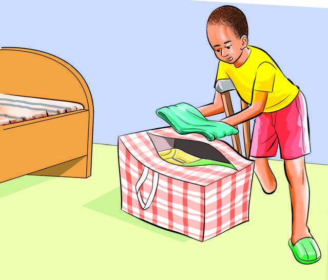
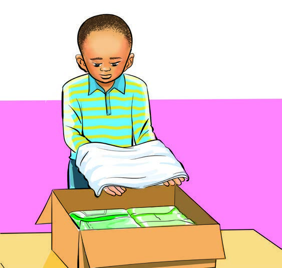

Page 46

3
I fold my clothes and keep them in a plastic bag.

4
I fold my clothes and keep them in a box.

3
I fold my clothes and keep them in a plastic bag.

4
I fold my clothes and keep them in a box.